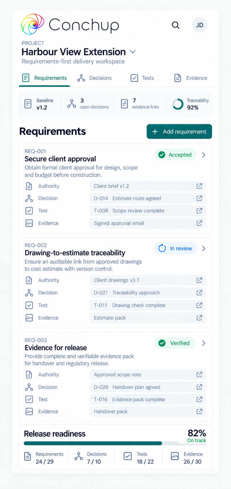
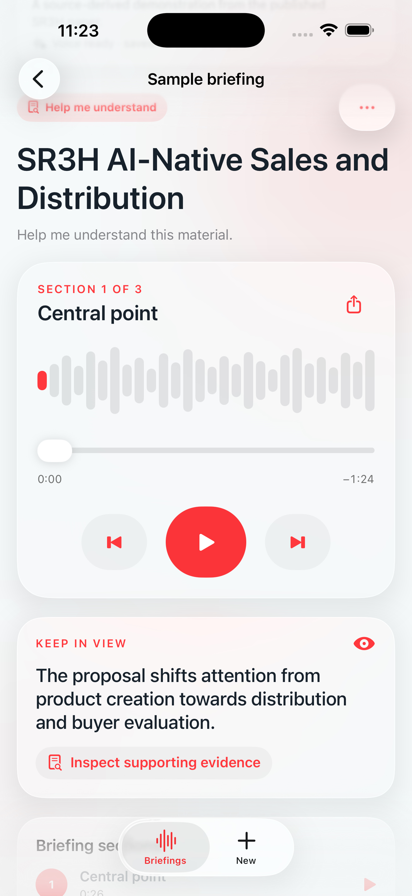
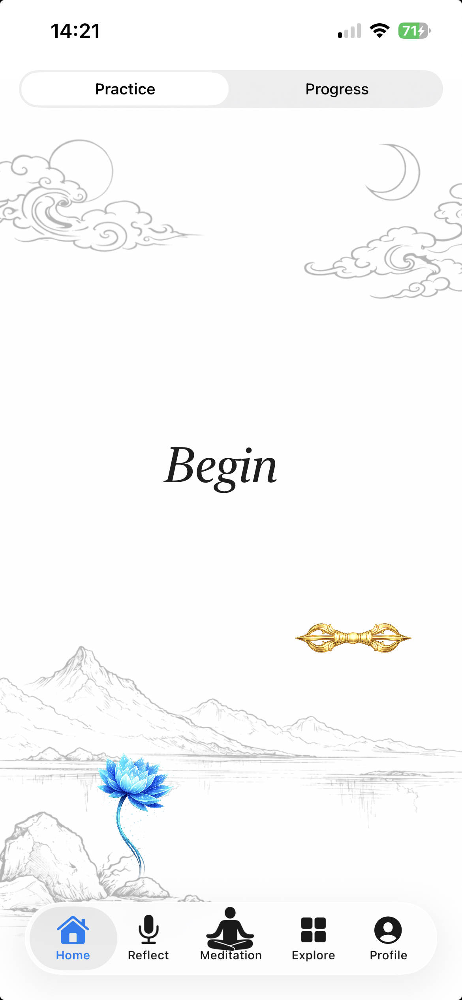

Context and privacy
Brane
Personal knowledge for more useful AI, with control over what is shared and what stays private. In Safari, it also shows which trackers are present on each page.
SR3H is an independent technology lab in Oxford. We research how AI works and build software that helps people do more with their ideas.
We study what happens as search becomes a conversation and AI begins to compare options or act on someone’s behalf. Then we build useful systems that keep people informed and in control.
Selected work


Persistent engineering context
Software engineering with a lasting record of requirements, decisions and the evidence behind a build. Explore ↗
Context and privacy
Personal knowledge for more useful AI, with control over what is shared and what stays private. In Safari, it also shows which trackers are present on each page.

Construction pricing
Clear guide-price ranges for UK building work, showing the assumptions and cost drivers behind each estimate. Also available as an MCP app for AI assistants. Website ↗
AI search analytics
See how AI finds, compares and recommends a company—then know what to change next. Start with a free website check. Explore ↗


Private briefings
A private workspace for developing briefings, with each person’s work kept separate.

Route navigation
Navigation that preserves the rider’s chosen route and makes rerouting an explicit decision. Website ↗

Local discovery
A place-discovery tool for exploring nearby destinations and deciding where to go next.

Reflection and practice
A space for reflection, meditation and Buddhist learning, bringing daily practice into everyday life. Website ↗

Viewing tracker
A personal viewing log for keeping track and deciding what to watch next.
AI, the web & emerging interaction
Search is becoming a conversation. People describe what they need; AI systems interpret intent, gather sources, compare options and may help take action. We study this path from question to choice: human–AI interaction, AI-mediated discovery, AEO, agents and MCP. We ask what evidence supports recommendations and how commercial influence is shown. Then we build and test practical systems.
Human–AI interaction
We explore how people set direction, give AI useful context, review its work and stay in control. Conchup and Brane put different parts of this work into practice.
Discuss our researchAI-mediated discovery
We investigate how assistants interpret needs, find information and businesses, and decide what to recommend. Signal and Market Loop explore the evidence, visibility and outcomes, including the role of commercial influence.
Pro bono websites for people and good causes.
Work with SR3H
We welcome thoughtful conversations with potential partners, customers, collaborators and people interested in the work we are growing.
hello@sr3h.uk